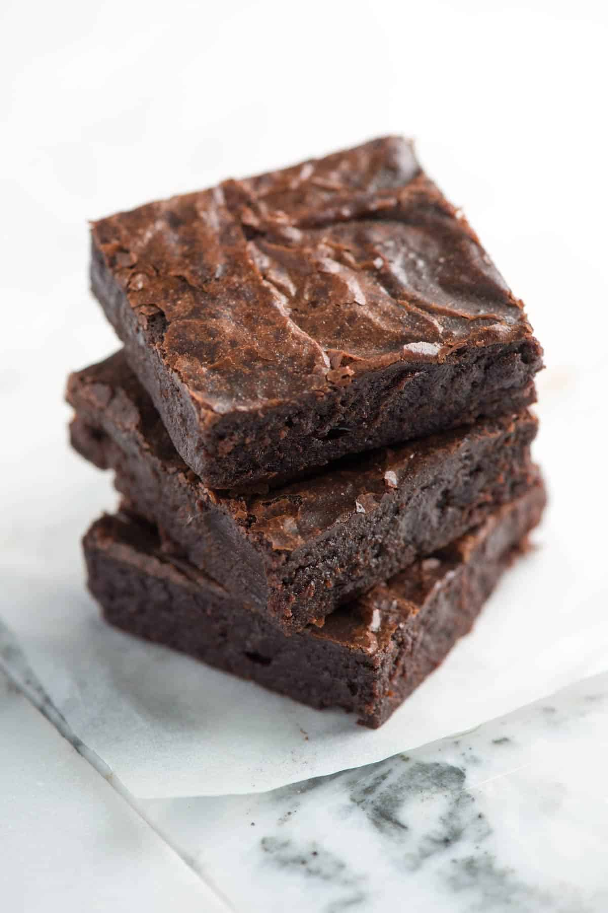

Brownies

A chocolate baked confection. Brownies come in a variety of forms and may
be either fudgy or cakey, depending on their density. Brownies often, but
not always, have a glossy "skin" on their upper crust.
Here's a very brief overview of what you can expect when you make homemade
lasagna: 1. Make the brownies: Melt the butter on the stove, then remove
from heat and add the remaining wet ingredients. Beat in the dry
ingredients. Spread the batter in the pan and bake. 2. Frost the brownies:
Stir the frosting ingredients together until well-combined, then frost the
brownies while they are still warm. Cut into squares when cool.
- 1/2 cup butter
- 1 cup white sugar
- 2 eggs
- 1 teaspoon vanilla extract
- 1/3 cup unsweetened cocoa powder
- 1/2 cup all-purpose flower
- 1/4 teaspoon salt
- 1/4 teaspoon baking powder
-
Preheat the oven to 350 degrees F (175 degrees C). Grease and flour an
8-inch square pan.
-
Melt 1/2 cup butter in a large saucepan. Remove from heat, and stir in
sugar, eggs, and 1 teaspoon vanilla. Beat in 1/3 cup cocoa, flour, salt,
and baking powder. Spread batter into prepared pan.
-
Bake in the preheated oven until top is dry and edges have started to
pull away from the sides of the pan, about 25 to 30 minutes. Let cool
briefly before frosting.
-
To make the frosting: Combine softened butter, confectioners' sugar, 3
tablespoons cocoa, honey, and 1 teaspoon vanilla extract in a bowl. Stir
until smooth. Frost brownies while they are still warm.